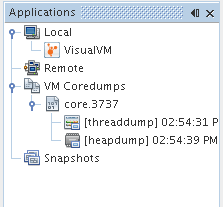
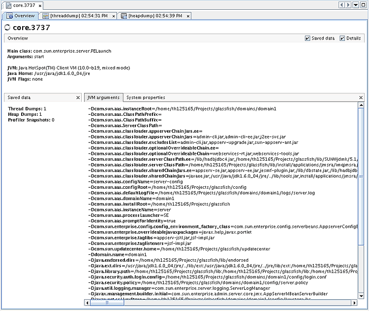

코어덤프 활용
VisualVM을 시작할때, Applications창은 VisualVM의 좌측에 보인다. Applications창은 로컬및 원격 애플리케이션을 빠르게 볼수 있도록 해준다. Applications창은 로컬시스템에 저장된 코어덤프와 프로파일링 스냅샷을 보여준다.
만약에 VisualVM을 솔라리스나 리눅스에서 실행했다면 Applications창에 VM Coredumps 노드가 보일것이다. 일반적으로, VisualVM은 코어덤프를 같은 머신에서 생성했다면 코어덤프를 열어볼수만 있다. 코어덤프는 JDK의 정보와 코어덤프를 생성한 머신의 커널정보를 가진다. VisualVM에서 코어덤프를 열어보기 위해서, JDK와 로컬시스템의 커널이 일치해야만 한다.
코어덤프는 덤프를 생성할 당시의 전체 힙메모리 내용을 가진다. VisualVM에서 코어덤프를 로드하면, 코어덤프 노드는 VM Coredumps 노드 아래 나타난다.
코어덤프의 개요를 보여주기 위해, 코어덤프를 선택한뒤 마우스 우측버튼을 클릭하고 Open을 선택하자. (다른방법으로는, 노드를 더블클릭하자.)
코어덤프에서 힙덤프나 쓰레드덤프를 보기 위해 코어덤프 노드를 선택하고 마우스 우측버튼을 클릭한 뒤 Heap Dump 나 Thread Dump를 선택하자.
로컬시스템에 쓰레드덤프와 힙덤프를 저장할 수 있다.